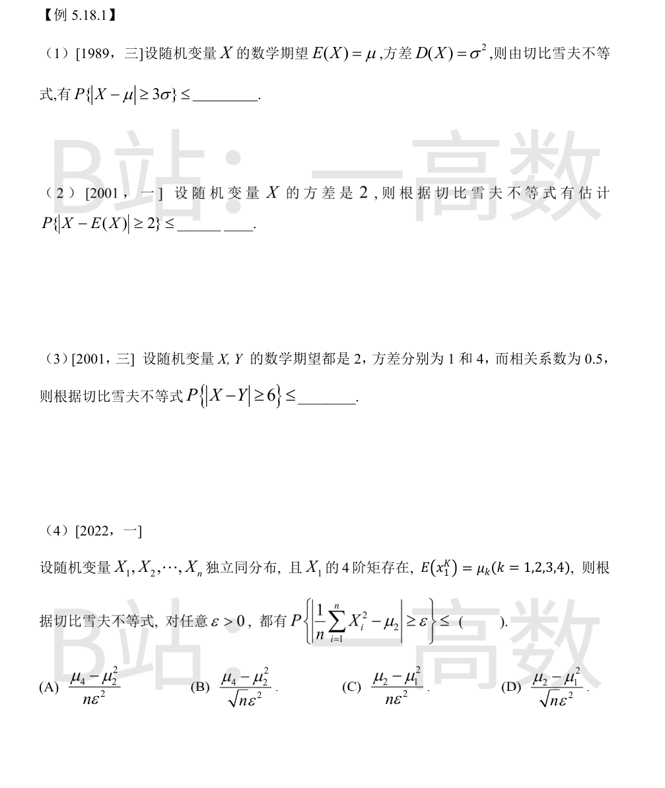

切比雪夫不等式：对任意 ε>0，有 $P\{|X-E(X)|\ge \varepsilon\}\le \dfrac{D(X)}{\varepsilon^2}$。
取 ε=3σ：
$$P\{|X-\mu|\ge 3\sigma\}\le \frac{\sigma^2}{(3\sigma)^2}=\frac{1}{9}.$$
上界与 σ 无关。
由切比雪夫不等式，取 ε=2：
$$P\{|X-E(X)|\ge 2\}\le \frac{D(X)}{2^2}=\frac{2}{4}=\frac{1}{2}.$$
注意此题给的是方差而不是标准差，ε=2 恰为 $\sqrt{D(X)}$。
令 Z=X-Y，则 E(Z)=E(X)-E(Y)=0。
$$D(Z)=D(X)+D(Y)-2\,\mathrm{Cov}(X,Y)=1+4-2\rho\sqrt{D(X)}\sqrt{D(Y)}=5-2\times 0.5\times 1\times 2=3.$$
由切比雪夫不等式，取 ε=6：
$$P\{|X-Y|\ge 6\}\le \frac{D(X-Y)}{6^2}=\frac{3}{36}=\frac{1}{12}.$$
关键点：先算出 X-Y 的方差（用到协方差），再套不等式。
令 Y_i=X_i^2，则 Y_1,…,Y_n 独立同分布。
$$E(Y_i)=E(X_i^2)=\mu_2,\qquad D(Y_i)=E(X_i^4)-\left[E(X_i^2)\right]^2=\mu_4-\mu_2^2.$$
对 $\dfrac{1}{n}\sum_{i=1}^n Y_i$ 用切比雪夫不等式：其期望为 μ₂，方差为 $\dfrac{D(Y_1)}{n}=\dfrac{\mu_4-\mu_2^2}{n}$，故
$$P\left\{\left|\frac{1}{n}\sum_{i=1}^n X_i^2-\mu_2\right|\ge \varepsilon\right\}\le \frac{\mu_4-\mu_2^2}{n\varepsilon^2}.$$
选 (A)。(C) 的分子 μ₂−μ₁² 是 $X$ 本身（而非 X²）的方差，属干扰项。